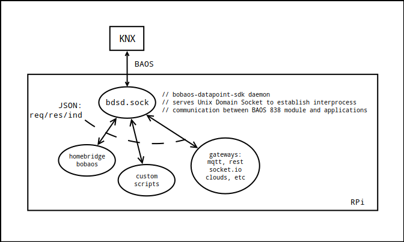

Launch daemon [bdsd.sock]¶
This module intended to solve architecturing problem when developing js applcation for KNX. Nodejs connects to BAOS 838 module via serial port, usually /dev/ttyAMA0 and it handles only one connection at a time. But what if you want to connect to KNX bus multiple clients? If you want to write some custom scripts and use this device as a MQTT gateway at a same time?
So, schematically it may look like this:

Installation¶
Assuming you have Raspberry Pi with installed Raspbian with configured access to BAOS module via /dev/ttyAMA0.
If not, follow instructions on bobaos repository page
Installation via script¶
$ curl -L https://raw.githubusercontent.com/bobaos/bdsd.sock/master/bdsd_install.sh | bash
Manual installation¶
1. Install npm package
$ sudo npm install -g bdsd.sock --unsafe-perm
Check if it executes correctly:
$ bdsd.sock
IPC: Checking for leftover socket.
IPC: No leftover socket found.
IPC: Listening at /run/user/1000/bdsd.sock
BAOS: connected to baos
BAOS: success on setting indications to: 0
BAOS: success on get datapoint description: { id: 1 , dpt: dpt9 }
BAOS: success on get datapoint description: { id: 2 , dpt: dpt5 }
......
......
BAOS: success on get datapoint description: { id: 999 , dpt: dpt16 }
BAOS: success on get datapoint description: { id: 1000 , dpt: dpt16 }
BAOS: success on setting indications to: 1
BAOS: got bus state: connected
Since version 2.0.0 bdsd.sock accepts command line arguments to ease running on different platforms.
$ bdsd.sock --help
Options:
--help Show help [boolean]
--version Show version number [boolean]
--sockfile, -s path to socket file. Default:
/run/user/1000/bdsd.sock'
--serialport-device, -d path to serialport device. Default: /dev/ttyAMA0
--serialport-params, -p serialport parameters: "baud rate,parity,data
bits,stop bits". Default: "19200,even,8,1"
2. Create systemd service folders, create service file
$ cd ~/
$ mkdir ~/.config/systemd
$ mkdir ~/.config/systemd/user
$ touch ~/.config/systemd/user/bdsd.service
Then add following to this file using your favourite text editor:
[Unit]
Description=Bobaos Datapoint Sdk Daemon
[Service]
ExecStart=/usr/bin/env bdsd.sock
StandardOutput=null
[Install]
WantedBy=default.target
3. Enable service, enable automatic start-up
$ systemctl --user daemon-reload
$ systemctl --user enable bdsd.service
$ sudo loginctl enable-linger pi
4. Start the service
$ systemctl --user start bdsd.service
5. Check with bdsd-cli
$ sudo npm -g install bdsd-cli
$ bdsd-cli
connected
bobaos> setProgrammingMode -v 1
Set programming mode: success
bobaos> getValue -s 1
{ id: 1, value: true }
bobaos>
Usage in js¶
For js applications there will be available client-side library which you may install from npm.
Further information you can find in repo: bdsd.client
Usage with other programming languages¶
For other programming languages you may implement client-side library which should communicate with IPC following Bobaos Datapoint Sdk Message Protocol.